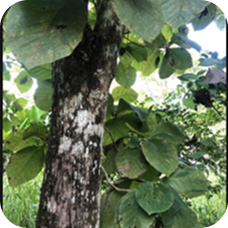

Info Tanaman Banyumanik

JATI
Kingdom: Plantae
Divisi: Tracheophyta
Class: Magnoliopsida
Ordo: Lamiales
Famili: Lamiaceae
Genus: Tectona
Spesies: Tectona grandis
💡 Fun Fact
Tanaman ini sering dipakai batangnya untuk dibuat furnitur.
🍃 Manfaat
- Pohon ini memiliki kualitas kayu unggul dan banyak digunakan sebagai bahan baku mebel dan konstruksi rumah.
- Mebel dan konstruksi kayu jati yang dibuat dengan tepat dapat bertahan hingga puluhan tahun tanpa mengalami kerusakan.
- Pohon jati dapat dimanfaatkan dalam konservasi lahan karena memiliki akar yang dalam dan kuat.
- Daunnya dapat digunakan untuk membungkus makanan atau bahkan sebagai obat tradisional.
🌞 Perawatan
- Penyiraman ulang secara berkala
- Penyiangan tanaman rumput pada awal pertumbuhan
- Pemangkasan cabang basah agar batang utama kuat
- Pupuk NPK tiap 6 bulan sekali
- Pengendalian hama daun dan batang (jika diperlukan)
- Penjarangan pohon (thinning) saat pohon mulai tumbuh besar
- Pemanenan mulai saat diameter batang utama > 30 cm